Fammi vedere tutto
Apri e gioca
Si spiega in due minuti. Dopo la prima partita ci giocano anche i bambini da soli.
-

21 Giochi Minuti
Ventuno giochi diversi in un'unica scatola, ognuno spiegabile e giocabile in un minuto scarso: si può cominciare a giocare prima ancora di essersi seduti bene. Perfetto quando non si sa cosa si vuole giocare, o quando c'è solo pochissimo tempo.
-

Bag of chips : un gioco
I segnalini sono patatine, e si pescano alla cieca dal sacchetto una alla volta, sperando nel colore giusto. È il gioco da mettere in mezzo al tavolo insieme alle ciotole vere: quello in cui converrebbe fermarsi un attimo prima, e non si ferma mai nessuno. Un quarto d'ora e si è già alla rivincita.
-

Bananagrams : il gioco di parole veloce
Sta dentro un sacchetto di stoffa a forma di banana, e non fa aspettare il turno a nessuno: si rovesciano le lettere e ognuno costruisce il proprio incrocio di parole a testa bassa, più in fretta che può. E se non c'è nessuno con cui giocare, si sfida il cronometro.
-

Bang!
Uno di voi è lo Sceriffo, e lo sa tutto il tavolo. Tutti gli altri no: c'è chi lo deve proteggere senza poterlo dire, chi lo vuole morto, e chi se ne sta in disparte aspettando che gli altri si tolgano di mezzo a vicenda. Da tirare fuori quando siete in tanti e avete voglia di non fidarvi di nessuno.
-

Bicchieri sprint
Una carta mostra l'ordine dei bicchieri e parte la corsa delle mani. Chi finisce per primo suona il campanello — ed è anche il primo a essere controllato, perché arrivare prima non conta niente se un bicchiere è fuori posto. Round da pochi secondi, uno dietro l'altro.
-

Champions!
Otto concorrenti, veri o immaginari, si sfidano in duelli improbabili decisi dal voto di tutti i giocatori. Indovinare il vincitore conta più della logica: il pubblico ha sempre l'ultima parola.
-

CocoRido All'Arrembaggio
Uno di voi legge una frase a metà, gli altri completano con la carta più assurda che hanno in mano — e chi ha letto decide, a modo suo, quale risposta gli ha strappato la risata più sincera. Chi vince quel turno diventa il prossimo a leggere.
-

Corinth
Si lanciano nove dadi insieme e si dispongono in fila dal valore più alto al più basso: prendete tutti i dadi di un livello e fate l'azione collegata. Più aspettate a scegliere, più dadi restano — e più forte è la tentazione di rimandare ancora un turno.
-

Dixit : un'immagine vale mille parole!
Paesaggi da sogno, personaggi strambi, e nessuna risposta esatta da calcolare: uno dice la sua frase e gli altri provano a capire quale immagine gli sia passata per la testa. Anche i punti stonano apposta — a segnarli non ci sono cubetti, ci sono otto conigli.
-

Dobble classic
Tra due carte qualsiasi del mazzo c'è sempre un simbolo in comune, uno solo: è una certezza matematica, e trovarlo prima degli altri è tutto il gioco. Si urla il nome del simbolo e si allunga la mano prima di aver finito di dirlo, per un quarto d'ora di fila.
-

Draftosaurus
A ogni turno qualcuno lancia un dado che decide dove tutti gli altri devono piazzare il proprio dinosauro — tranne chi ha lanciato, che lo mette dove vuole. Un piccolo dispetto a turno, e il vostro zoo dei sogni si scontra ogni volta con la fortuna di chi tira.
-

Draghetti : arrivano i draghetti!
Quarantasette uova di drago coperte sul tavolo, e ricordarsi dov'è finito il draghetto giusto è la parte facile. Il difficile è scegliere: girare quello che serve a voi, o quello che serviva a chi vi sta di fronte. E sotto qualche guscio non c'è nessuno: turno buttato.
-

Duck & Cover
Paperelle pirata, paperelle fantasma, paperelle poliziotto, paperelle astronaute: ottantaquattro in tutto, capaci di qualunque cosa tranne una — evitare gli schizzi nella vasca da bagno. Il resto è riconoscere in fretta la propria in mezzo a tutte le altre.
-

Fantascatti : nuova edizione
Nel vecchio maniero c'è un fantasma dispettoso che sposta le cose apposta per confondervi, e Tommy è arrivato con la macchina fotografica per portarsi a casa uno scatto. Cinque oggetti lì davanti, le mani che partono prima della testa: un quarto d'ora, e seduti fermi non ci si sta.
-

Gasha
Girate la manovella della macchina e sperate che esca proprio il pezzo che vi manca per completare il set — ma non lo scoprite finché non l'avete già preso. Ogni estrazione è un piccolo salto nel buio, esattamente come i distributori a sorpresa a cui il gioco si ispira.
-

Hats
Ogni turno scambiate un cappello con quelli sul tavolo, cercando di completare la vostra collezione — ma il cappello che vi piace di più conviene proteggerlo, perché vale doppio se resta con voi fino alla fine. Otto turni, tutti a rubarsi i colori a vicenda.
-

Just one : a te la scelta, fai la differenza!
Una parola da far indovinare a un compagno, e ognuno scrive di nascosto il suo indizio sul cavalletto. Se due hanno avuto la stessa idea i due indizi si cancellano prima che lui li veda: siete tutti dalla stessa parte, e la parola più ovvia è proprio quella da non scrivere.
-

Kingdomino
Costruite il vostro regno componendo tessere a domino di foreste, laghi e campi di grano. Le tessere con più corone valgono di più, ma vi costringono a scegliere per ultimi al turno successivo.
-

Lo Scatto Perfetto
Sovrapponete carte bucate come fossero l'obiettivo della vostra macchina fotografica, cercando di inquadrare bene l'animale sotto. Chi inquadra lo Yeti nascosto tra le tessere si porta a casa un bonus che nessun altro può più prendere.
-

Machi Koro
A ogni turno lanciate i dadi, ma il numero che esce non paga solo voi: alcuni dei vostri edifici incassano anche quando tira l'avversario. Un classico immediato: si capisce in due minuti, e si sorride ogni volta che il dado sbagliato arricchisce l'altro invece di voi.
-

MindUp!
Ogni turno tutti giocano una carta in segreto, poi si scoprono insieme: si forma una fila ordinata dal basso all'alto e ognuno prende la carta della fila precedente nella stessa posizione della propria. Sembra un dettaglio da niente, finché non vi accorgete che la posizione conta più della carta stessa.
-

Nome in codice : collega gli indizi
Venticinque parole sul tavolo, e il vostro capo può dirvene una sola, con un numero attaccato: poi deve stare zitto e guardarvi mentre sbagliate. Tra quelle venticinque c'è anche l'assassino, e chi lo tocca non perde punti — perde la partita, subito, comunque stesse andando.
-

Once Upon a Castle
A ogni turno chi lancia i dadi sceglie per primo cosa prendere, e gli altri si dividono quello che resta. Ognuno disegna il proprio castello su un foglio personale, in gara silenziosa per vedere chi lo finisce meglio.
-

Railroad Ink Blu
Stessa idea di Railroad Ink Rosso: dadi in comune, disegno personale, foglio suo per ciascuno. Qui però a complicarvi la mappa non sono lava e meteore, ma fiumi e laghi da aggirare con le vostre strade.
-

Railroad Ink Rosso
Si lanciano i dadi e tutti, nello stesso momento, disegnano strade e ferrovie sul proprio foglio: stessi dadi per tutti, ma ogni mappa finisce diversa. Le strade che restano a metà, senza uscire dal foglio, vi tolgono punti — e con i dadi Lava e Meteora anche un pezzo di mappa può esplodervi in faccia.
-

Rory's Story cubes. Classic
-

Rory's story cubes. Fantasia
-

Rory's Story cubes. Voyages
-

Slapzi : link in a blink!
-

Smimando : un party game esilarante!
-

Sock Monsters
Muovete di nascosto il vostro mostro sollevando la pedina: solo dopo scoprite se si è addormentato a metà strada, oppure può ancora rubare un calzino. Poi tocca all'elfo cercare le coppie nascoste tra cassetti e armadietti, prima che i mostri gliele portino via.
-

Speedy word : nomi, cose, citt ...
-

Taco party torta pacco pizza
-

TeleSketch
-

Tic Toc
-

Yokai
Non potete parlarvi. Nemmeno un cenno, nemmeno un'occhiata d'intesa. Dovete rimettere in ordine gli spiriti per colore aiutandovi solo con dei suggerimenti muti — e scoprirete che mettersi d'accordo in silenzio è molto più difficile, e molto più divertente, di quanto sembri.
-

Zombie Kidz Evolution
Difendete la scuola dall'invasione zombie chiudendo le quattro porte prima che i mostri dilaghino tra le aule. Ogni missione superata apre una busta sigillata: il gioco cresce e cambia, partita dopo partita.
-

ZombieZ
Leggi e gioca
Una famiglia legge il regolamento in autonomia, lo capisce e parte.
-
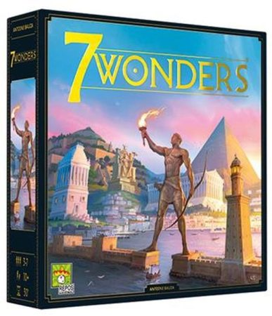
7 wonders
Alessandria, Babilonia: ognuno ha la sua Meraviglia da tirare su, e nessuno parte dalla stessa posizione degli altri. Non ci si scontra mai davvero — si passa mezz'ora a guardare con la coda dell'occhio i vicini di tavolo che diventano grandi, mentre voi state sulle vostre carte.
-

Adventure games : L'isola vulcaninca
Un'isola dove la natura sembra impazzita: terremoti, grandine, fulmini — e ogni volta che la terra trema, da qualche parte dei contrabbandieri hanno appena messo a segno un colpo. Siete quattro ricercatori in spedizione e la storia si apre un paragrafo alla volta: un romanzo che invece di leggerlo lo giocate insieme.
-
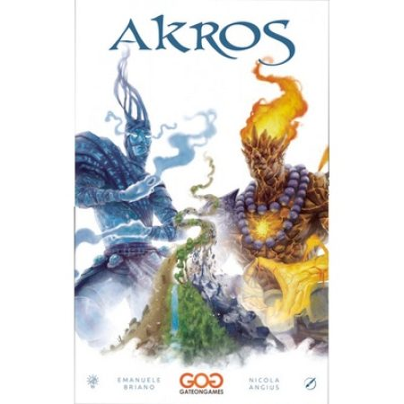
Akros
I servitori di Ifrit e quelli di Jinn si contendono un mondo che non esiste ancora: lo tirano su con le proprie mani mentre già se lo disputano. Un duello per due in cui le due parti non si somigliano nemmeno un po' — e in venti minuti, mondo compreso, è già tutto finito.
-

Alibi, 3 delitti intricati. Sei proprio tu l'assassino?
Sei sospettati, e nessuno di voi può giurare di essere innocente: nemmeno l'assassino sa di esserlo, finché non salta fuori alla fine. Nella scatola tre serate diverse — una crociera sul Nilo, un maniero scozzese, i retroscena di un talent di cucina — da spendere una alla volta.
-

Block and key
Al centro del tavolo cresce un tempio di blocchi, e ognuno lo guarda dal proprio lato: quello che a voi sembra a posto, dalla sedia di fronte è tutt'altra cosa. Si gioca in silenzio, con la testa piegata a cercare l'angolo giusto — e da soli funziona uguale.
-
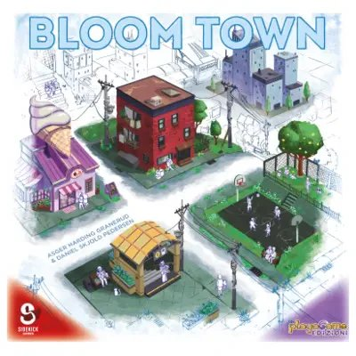
Bloom Town
Ogni turno scegliete una tessera e la incastrate nella vostra città. Sembra semplice, finché non vi accorgete che il pezzo perfetto per quel buco l'ha appena preso il vostro vicino — e che quel buco vi resterà lì, a guardarvi, fino alla fine della partita.
-
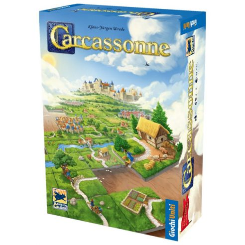
Carcassonne
Il paesaggio non esiste finché non lo posate voi: una tessera alla volta, strade, campi e mura crescono al centro del tavolo sotto gli occhi di tutti. È il gioco con cui in tanti hanno cominciato, e a fine partita ci si ferma a guardare la Francia medievale nata lì senza che nessuno l'avesse disegnata.
-

Cascadia
Montagne, foreste e acque del nord del Pacifico, e sopra ci vivono orsi, aquile, salmoni, alci e volpi. Non basta che il paesaggio venga bello: dev'essere anche un posto dove quegli animali stanno bene. Una partita tranquilla, che regge anche da soli in una sera in cui non si ha voglia di nessuno.
-
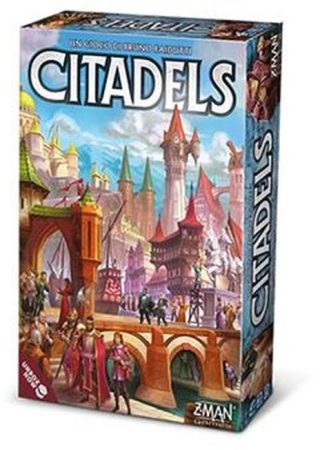
Citadels : un gioco di intrighi
Un regno in cui stasera nessuno è chi dice di essere: i ruoli si scelgono in segreto e cambiano a ogni giro, e voi passate la partita a studiare le mosse degli altri per capire chi vi siete trovati davanti. Intanto la città cresce quasi per conto suo.
-
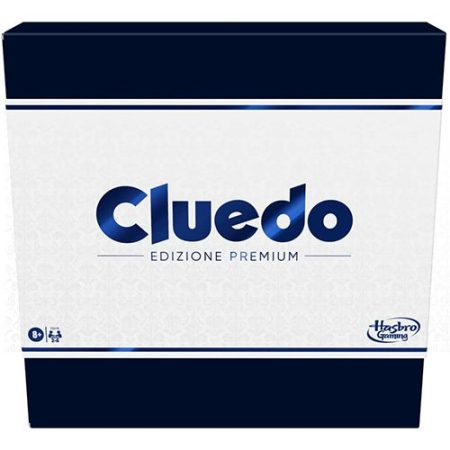
Cluedo : edizione premium
Pedine di legno, sei armi in metallo pressofuso, finiture in lamina d'oro: la villa e i sospettati sono quelli di sempre, ma qui l'arma del delitto pesa in mano. E il blocchetto ha una copertura per ciascuno, così il vicino non legge quello che avete appena escluso.
-
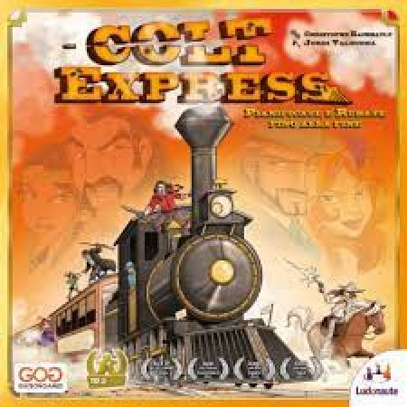
Colt Express
Il treno sta in mezzo al tavolo per davvero, vagone dopo vagone, e ci si gioca sopra e dentro. Voi siete i banditi saliti a bordo per le paghe della miniera, con lo sceriffo Samuel Ford che gira negli stessi corridoi. Ne esce una gran confusione, ed è esattamente per quella che si gioca.
-
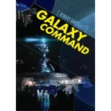
Conspiracy
Costruite una piramide di carte a rovescio, pescando fino a tre carte per volta e scegliendone solo una: le altre restano scoperte sul tavolo, pronte per essere prese dal prossimo giocatore. E la carta delle perle cambia proprietario ogni volta che qualcuno vi supera in quantità.
-

Escape room : il gioco
Al centro del tavolo c'è il Chrono Decoder, che scandisce il conto alla rovescia e ogni tanto vi allunga un suggerimento. Da lì in poi la stanza chiusa siete voi: un'ora per uscirne, e o ne esce tutta la squadra o non ne esce nessuno. Le avventure nella scatola sono quattro.
-
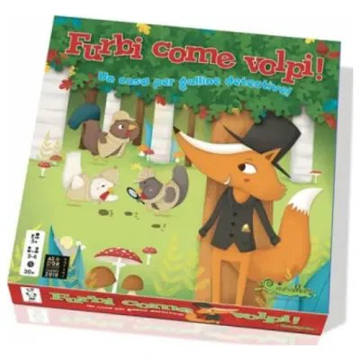
Furbi come volpi : un caso per galline detective!
Una volpe è scappata dal pollaio con l'uovo d'oro, e le galline detective siete voi — tutti dalla stessa parte, nessuno contro nessuno. Gli indizi si passano dentro uno scanner vero, di quelli che si tengono in mano, e a mano a mano che si scagionano le innocenti il cerchio si stringe.
-

Grove : gioco solitario in 9 carte
Un frutteto di aranci, limoni e lime che sta in nove carte e in dieci minuti. Il guaio sono le radure: spazi vuoti dove non cresce niente e non si raccoglie niente, da schivare mentre piazzate i dadi. È il solitario che finisce e fa subito venire voglia di rimescolare e ricominciare.
-
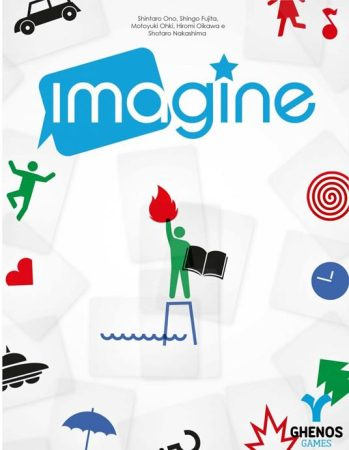
Imagine
Sessanta carte trasparenti da sovrapporre e spostare finché non ci si vede dentro qualcosa: è tutto quello che avete per far arrivare agli altri l'enigma che vi è capitato. Niente voce, niente versi, niente dita puntate — solo forme trasparenti, una sopra l'altra.
-
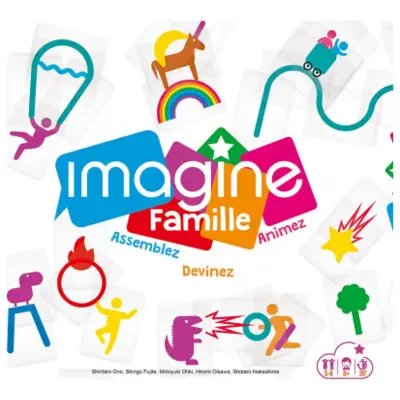
Imagine family : assemblate, animate, indovinate
È lo stesso gioco di Imagine, con due aiuti in più per chi è piccolo o gioca la prima volta: le immagini sulle carte sono più semplici, e c'è una plancia su cui appoggiare i trasparenti invece di tenerli in mano. Il divieto di parlare, quello, resta identico.
-
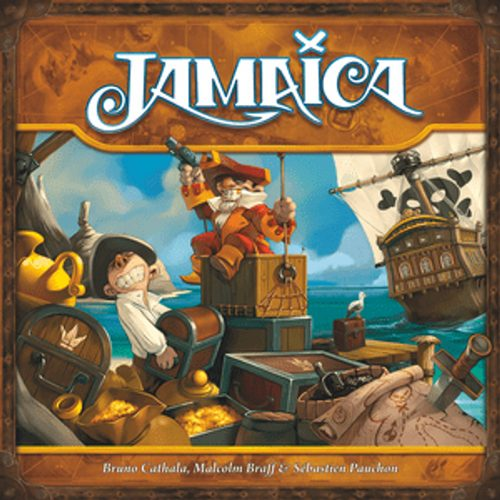
Jamaica
Una regata di pirati intorno alla Giamaica, con la stiva da riempire strada facendo: cibo, polvere da cannone e tesori si contendono gli stessi cinque posti. E si corre tutti sullo stesso giro, il che vuol dire che chi vi passa davanti ce l'avete a tiro.
-
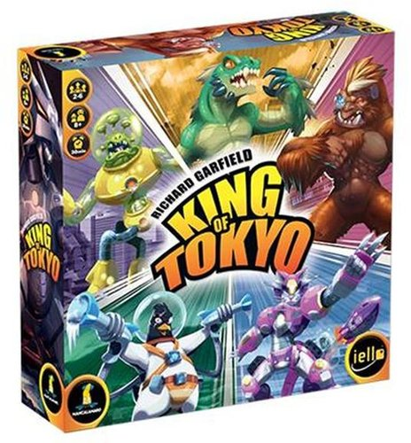
King of Tokyo
Mostri giganti da film di serie B che si prendono a testate per stare in cima a Tokyo. Nella città però ci sta uno solo per volta, e chi ci sta le prende da tutti gli altri insieme: per curarsi bisogna decidere di scendere, e lasciare il posto a qualcun altro.
-

Le cronache di Avel
Ad Avel il nemico non ha una faccia: è una luna. Kurodar si è levata in cielo, il suo potere ha risvegliato le forze del male, e tocca a voi tenere in piedi il castello. Ognuno si costruisce il proprio eroe prima di partire, e in fondo alla mappa aspetta la Bestia.
-

Micromacro : Crime city. True detective
Una sola grande mappa disegnata, aperta in mezzo al tavolo, e dentro ci sono risse, furti e omicidi nascosti tra le vie. La lente d'ingrandimento non è un gadget: certi dettagli sono disegnati talmente piccoli che senza non li vedete. Si cerca insieme, ma trovare per primo è un piacere che non si divide.
-

Momiji
Nel Giardino Imperiale raccogliete e giocate carte foglia per completare collezioni e conquistare le ghiande più preziose. Chi cattura lo scoiattolo guadagna un piccolo vantaggio a ogni turno degli altri.
-
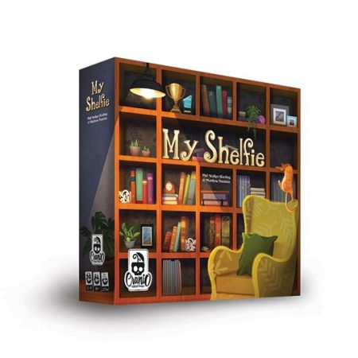
My shelfie
Vi è appena arrivata una libreria nuova, e adesso va riempita: libri, piante, giochi da tavolo, ritratti, premi. E i gatti — in mezzo alle cose serie da sistemare c'è scritto di lasciare spazio anche per loro. Alla fine si vede a occhio chi ha la libreria messa meglio.
-
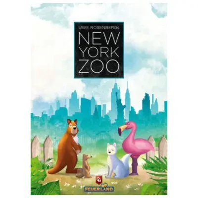
New York Zoo
Incastrate pezzi di forme diverse per costruire i recinti del vostro zoo, sperando che il conto torni prima che finisca lo spazio sulla plancia. Gli animali dentro si riproducono da soli, e un recinto pieno si smonta di colpo lasciando spazio per un'attrazione nuova — un piccolo Tetris che cambia continuamente sotto i vostri occhi.
-
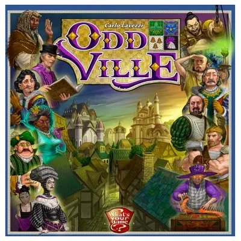
Oddville
Avete solo quattro carte lavoratore, e ognuna fa una cosa diversa: quando le avete usate tutte, per riprenderle dovete pagare o aspettare il turno giusto. Ogni edificio conviene collegarlo con una strada a quelli già in città — la connessione vale più dell'edificio in sé.
-

Orchard : gioco solitario in 9 carte
Nove carte sul tavolo e un frutteto che cresce sovrapponendo gli alberi: meli sui meli, peri sui peri, e il raccolto migliora. Dieci minuti da soli, con la stessa manciata di carte da rigiocare finché non viene meglio. In catalogo c'è anche Grove: stesso frutteto, agrumi al posto delle mele.
-
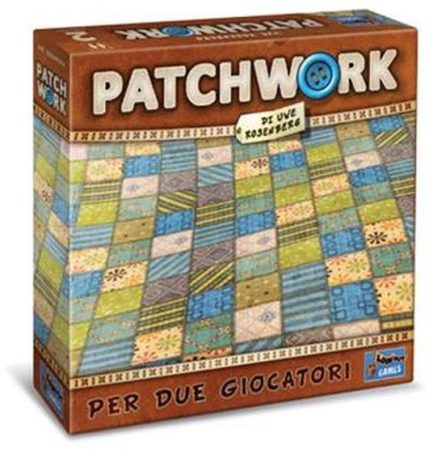
Patchwork : per due giocatori
Due sarti, una trapunta a testa, e le pezze che non combaciano quasi mai — il patchwork è nato proprio così, per non sprecare i ritagli di stoffa avanzati. La pezza che vi serve e quella che vi costa meno tempo non sono quasi mai la stessa, e a contendersele siete solo in due.
-
Pozioni esplosive
Un dispenser pieno di biglie e una pesca alla cieca: se la biglia che esce ne incontra altre dello stesso colore parte una reazione a catena, e per un attimo sembra merito vostro. Le pozioni finite fanno punti — oppure ve le bevete, e allora fanno tutt'altro.
-

Project L
Niente storia, niente ambientazione: solo pezzi di plastica di forme diverse da incastrare finché un puzzle non è completo. Si parte con due pezzi in tutto, e i puzzle sono di due tipi — dorso bianco i semplici, dorso nero quelli che rendono di più. Quando passare ai neri lo decidete voi.
-
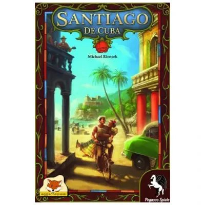
Santiago De Cuba
Un'unica auto gira in senso orario lungo la via, e voi decidete quanto farla avanzare: il primo passo è gratis, ogni passo in più vi costa un peso. Fermarvi davanti al cubano giusto vi frutta merci o denaro — e se qualcuno usa un edificio che avete costruito voi, il punto va comunque a voi.
-
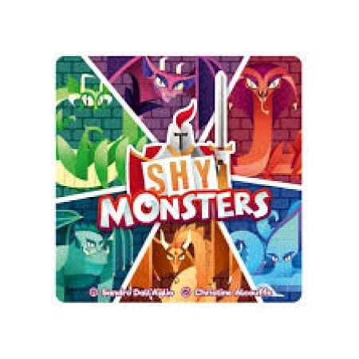
Shy monsters
-
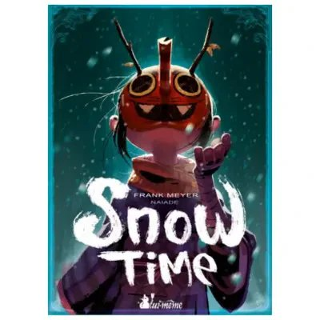
Snow Time
Arrampicatevi sull'albero magico per rubare i frutti prima dei rivali, ramo dopo ramo. Chi resta solo li raccoglie tutti, ma un'imboscata dall'alto può rovinarvi la festa.
-
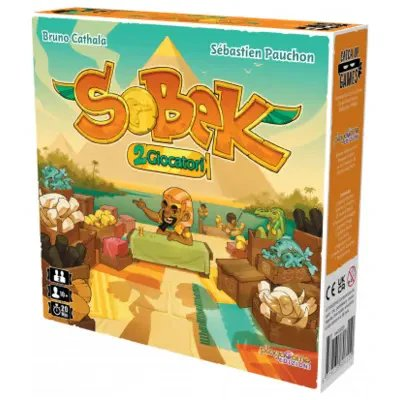
Sobek 2 giocatori
Un'ankh sul tabellone punta in due direzioni: potete prendere gratis la tessera più vicina, oppure allungarvi per quella che vi serve davvero — ma ogni tessera che scavalcate diventa corruzione, e la corruzione alla fine si paga cara.
-
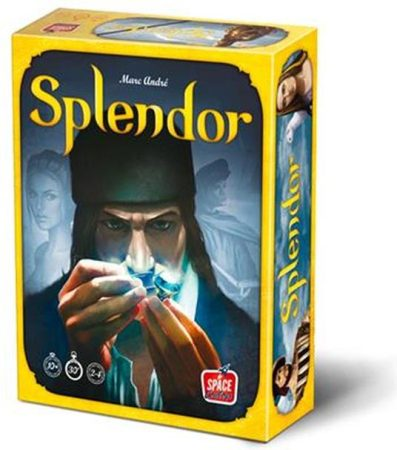
Splendor
-
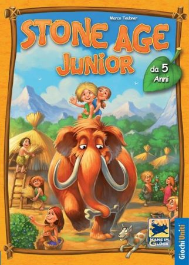
Stone Age junior
-
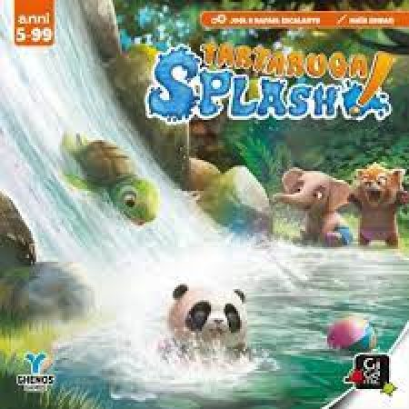
Tartaruga splash!
-
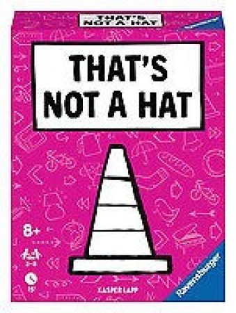
That's not a hat
-
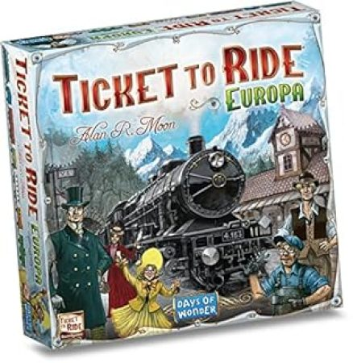
Ticket to ride Europa
-
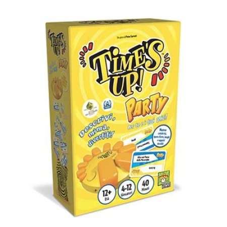
Time's up! : BIG BOX Party : versione gialla
-
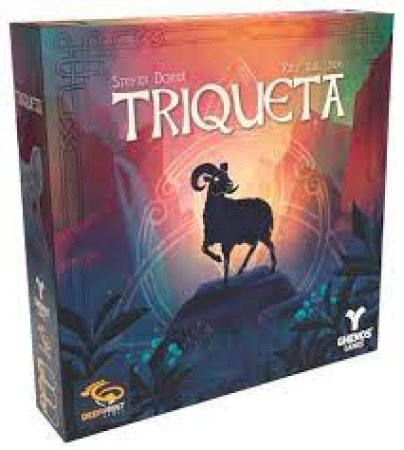
Triqueta
-
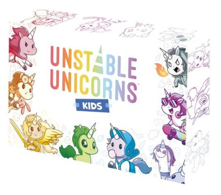
Unstable Unicorns kids
-
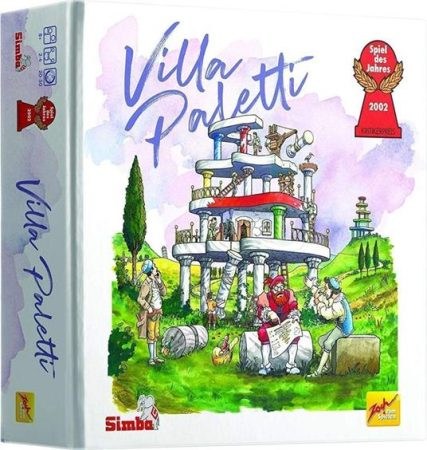
Villa Paletti
-

Welcome to New Las Vegas
Ogni turno si girano tre carte e si formano tre abbinamenti numero più effetto: ognuno sceglie in silenzio quello che gli serve e lo scrive sul proprio foglio. Si può giocare tutti insieme, letteralmente tutti — funziona anche in cento persone nella stessa stanza.
-
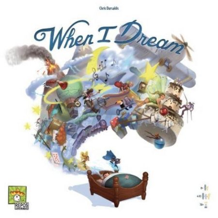
When I dream
Meglio farselo spiegare
Meglio se qualcuno l'ha già provato e accompagna la prima partita.
-
Aquatica
Le vostre carte, giocate bene, si incastrano una nell'altra: in un turno fortunato potete arrivare a mettere in fila anche dieci azioni di seguito. Le vostre mante aiutano finché non si stancano — poi restano lì, inutili, finché non trovate il modo di farle riposare.
-
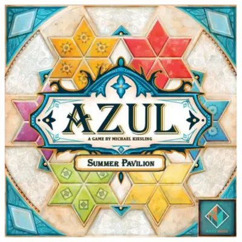
Azul Summer Pavillion
Ogni turno cambia il colore jolly, e la tessera che sembrava inutile un attimo prima diventa improvvisamente quella che vi serviva. Le stelle del vostro pannello si riempiono con regole diverse l'una dall'altra: un mosaico che cresce a ogni round, quasi mai come lo avevate immaginato voi.
-
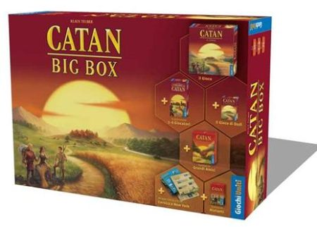
Catan : big box
Il gioco vero non è sull'isola, è dall'altra parte del tavolo: si tratta, ci si sporge per un'offerta detta a mezza voce, e ogni tanto si dice no per dispetto più che per convenienza. Questa è la scatola grande: c'è posto per una tavolata intera, e dentro anche di che cavarsela nelle sere corte.
-

Era Il Medioevo
I vostri dadi rappresentano contadini, preti, nobili e borghesi: li tirate e li usate per costruire, pezzo su pezzo, una vera città tridimensionale sul tavolo. Attenzione però: alcune combinazioni scatenano disastri che possono colpire gli avversari, o ritorcersi contro di voi.
-

Evergreen
Un pianeta tutto vostro, diviso in biomi, dove si piantano germogli e si aspetta che diventino alberi alti, inseguendo il sole che gira per quattro stagioni. A fine partita quello che avete davanti somiglia più a un piccolo diorama di legno che a un tabellone, e viene voglia di non smontarlo.
-
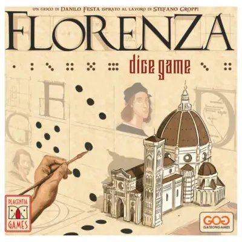
Florenza Dice Game
Chi tira i dadi ne sceglie tre per sé, e gli altri si dividono uno a testa quello che resta — un vantaggio evidente per chi tira, bilanciato dal fatto che il turno gira e tocca a tutti. Con quei dadi commissionate opere e costruite palazzi nella Firenze del Rinascimento.
-
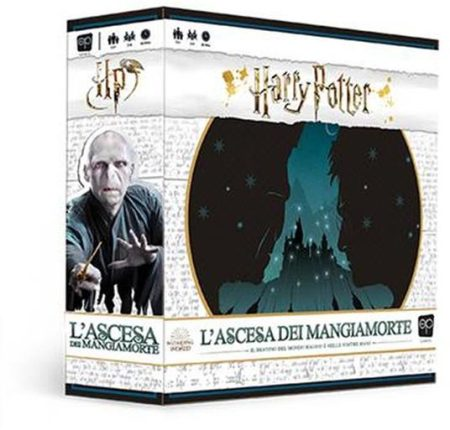
Harry Potter. L'ascesa dei mangiamorte
Mentre voi radunate maghi, Voldemort si prende il mondo magico un luogo alla volta, e il tempo non gioca dalla vostra parte. Tutti i personaggi sul tavolo sono carte piatte; lui no — lui è una miniatura scolpita, e ve la trovate davanti dal primo turno all'ultimo.
-
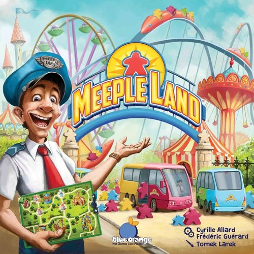
Meepleland
Piazzate giostre e servizi cercando di non lasciare vicoli ciechi: un percorso chiuso per sbaglio significa visitatori bloccati e un'attrazione costosa che resta vuota fino alla fine. Il parco che vince è quello più facile da attraversare, non quello con più giostre.
-

Meeples and Monsters
Pescate a caso dal vostro sacchetto: quello che esce decide cosa potete fare in quel turno, contadini compresi, che spesso non servono a molto. Con il tempo li fate diventare cavalieri, chierici o maghi — ma il sacchetto resta pieno di sorprese fino all'ultima partita.
-

NobiNobi GDR Magia
Stessa struttura di Spada — i ruoli di narratore e protagonista girano a ogni turno — ma qui le prove si superano con incantesimi invece che con la spada, e i segreti da scoprire hanno il sapore della magia.
-

NobiNobi GDR Spada
A ogni turno uno di voi pesca una carta scena e la racconta come Master, un altro la vive come protagonista tirando i dadi per superarla — poi i ruoli girano, e tocca a un altro inventare il pezzo successivo. Nessuno resta sempre a comandare, e la storia cambia direzione a ogni mano.
-
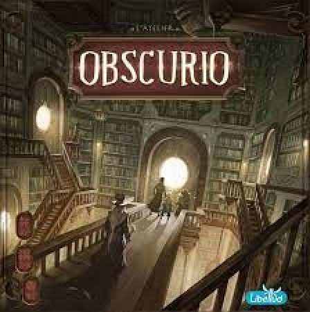
Obscurio
Siete maghi chiusi in una biblioteca e l'unico che sa la strada è un libro, il Grimorio, che può parlarvi soltanto per immagini. Il guaio è che il Grimorio sa anche chi è il traditore seduto tra voi, e deve guidare pure lui: sa la verità e non ha modo di dirvela.
-
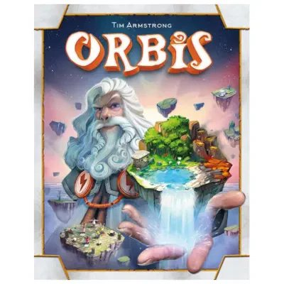
Orbis
Ogni tessera di territorio che prendete lascia dietro di sé fedeli dello stesso colore su quelle vicine, rendendole più preziose per chi gioca dopo di voi. Quindi ogni vostra scelta regala qualcosa all'avversario, che lo vogliate o no.
-
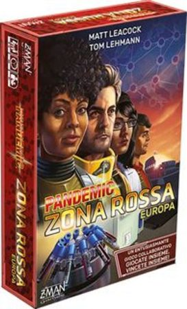
Pandemic : Zona rossa : Europa
Le epidemie si accendono città per città in Europa, e la squadra mandata a spegnerle siete voi: si corre a curare mentre si cercano le cure, e mezz'ora dopo è già deciso. Non serve avere in casa nessun altro Pandemic — questa scatola sta in piedi da sola.
-
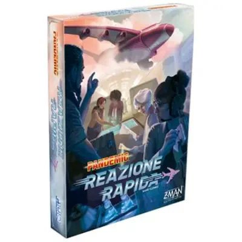
Pandemic Reazione Rapida
Una clessidra di due minuti scandisce ogni round: dovete lanciare e rilanciare i dadi in fretta e decidere insieme chi vola dove. Se la sabbia finisce prima che abbiate deciso, perdete tempo prezioso e arriva un'altra città in crisi — non c'è un attimo per pensarci su.
-
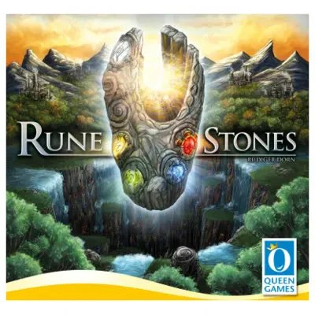
Rune Stones
Ogni volta che giocate due carte insieme, quella con il numero più alto sparisce per sempre dal vostro mazzo: dovete decidere se sacrificare una carta forte per liberarvi delle deboli, o il contrario. Con gemme e artefatti forgiate pietre runiche che vi danno un potere diverso da quello di tutti gli altri stregoni al tavolo.
-
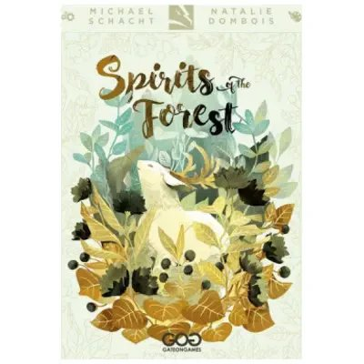
Spirit of the Forest
Raccogliete tessere spirito legate ai quattro elementi della foresta, sfidandovi a costruire la collezione più ricca prima che il tavolo resti vuoto. Sullo scaffale accanto trovi anche Moonlight: la stessa foresta di notte, che unita alla scatola base trasforma la sfida in un'alleanza contro il buio (o in una partita in solitaria, se preferisci).
-
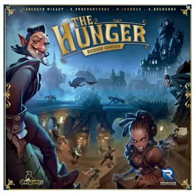
The Hunger
Siete vampiri in corsa contro l'alba: ogni preda catturata rallenta il vostro mazzo di carte, quindi più cacciate più rischiate di restare fuori quando sorge il sole. Chi è troppo goloso perde tutto.
-
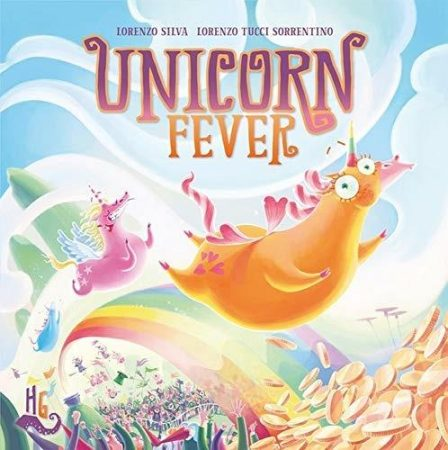
Unicorn Fever
-

Villagers
Ogni carta che pescate può servire a voi, o solo a impedire che serva a chi gioca dopo — a volte conviene prenderla proprio per fare dispetto. Le catene di paesani dello stesso mestiere valgono sempre di più: un fabbro in più nella fila giusta cambia la partita.
-
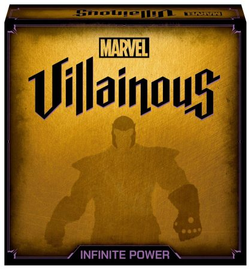
Villainous. Infinite power
-
Watergate
Uno di voi è Nixon e deve solo arrivare in fondo senza farsi inchiodare. L'altro è il Washington Post e deve collegare due prove al presidente prima che scada il tempo. Si gioca in due, su un tavolo piccolo, e si suda.
-
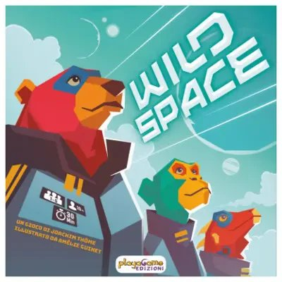
Wild Space
Ogni carta equipaggio che giocate può innescarne un'altra già in tavola, se le condizioni tornano giuste. Costruire la combinazione al momento giusto scatena una reazione a catena che, in dieci turni, può ribaltare la partita.
-

Zefiria
Siete Spiriti del Vento alle prese con un cielo in disordine: rimettete le venticinque isole sospese in fila, dalla più piccola alla più grande, prima che il tempo scada. Le tempeste vi rimescolano le carte per davvero, e ogni Spirito ha poteri diversi per uscirne insieme.
Prenditi la serata
Regolamento lungo e preparazione corposa. Si mette in conto la serata.
-

Dune : un gioco di conquista e diplomazia
Su Arrakis c'è la spezia, l'unica cosa che conti in tutto l'universo, e la si tiene solo se si è disposti a sacrificare quello che si ha di più caro. Quattro fazioni che non si somigliano in niente, la diplomazia che pesa quanto la forza, e alleanze che a metà partita cambiano padrone.
-

Dungeonology
Non uccidete i mostri del dungeon: li osservate di nascosto e prendete appunti sulle loro abitudini, sperando che nessuno vi scopra. Gli altri studiosi stanno facendo lo stesso — e possono rovinarvi la tesi prima che la finiate, quindi la cattedra non è mai davvero al sicuro fino all'ultimo turno.
-

Hippocrates
Ogni turno accogliete pazienti che avrebbero tutti bisogno di cure urgenti, ma potete curarne solo alcuni: scegliere chi lasciare in sala d'attesa vi costa reputazione. E se dimenticate di pagare i vostri dottori, se ne vanno — proprio quando servono di più.
-

Oak
Una quercia che era già lì agli albori del mondo, e dal cui legno — dice la leggenda — sono nati i primi animali e i primi uomini. Siete a capo di uno dei quattro Ordini druidici che la venerano, e per farvi notare da lei si sale lungo i rami. Ci vuole una serata intera.
-

Puerto Rico 1897
-

Sherlock Holmes consulente investigativo : I Delitti del Tamigi e Altri Casi
-

Tang Garden
Ogni tessera che piazzate deve incrociare esattamente i bordi di quella già sul tavolo — un incastro che si complica partita dopo partita. E i personaggi che mettete nel giardino fanno punti solo se, guardando dritti davanti a sé, vedono proprio quello che desiderano: sbagliate la prospettiva, e quel posto vale zero.
-

Terraforming Mars : raggiungere Marte stato un grande passo: renderlo abitabile ci dar un nuovo mondo
-

Tutankhamun
-

Visconti del Regno Occidentale
Ogni carta che giocate decide anche quanto lontano si sposta il vostro Visconte sul tabellone — un doppio calcolo da soppesare a ogni turno, tra la mano e la mappa. Il regno può scivolare in povertà o esplodere di prosperità, e chi ha costruito meglio in quel momento preciso porta a casa la partita.
-

Wingspan
-

Woodcraft
I vostri pezzi di legno sono dadi: li segate in due, li incollate insieme, li scartate se serve — e ogni taglio sbagliato è legno perso per sempre. Le azioni che nessuno sceglie diventano via via più convenienti, quindi anche aspettare, in questo gioco, è una mossa vera.
Livello non assegnato ancora
Nessuno li ha ancora provati abbastanza per dire quanto aiuto serve.
-

13 foglie
Le foglie d'autunno sul mazzo sono disegnate con dolcezza, e per i primi due minuti ci si crede. Poi qualcuno cala la carta che sbarra la strada a tutti quelli che vengono dopo, e il resto della partita è un giro di accuse — con il sorriso. Si spiega in due minuti e ne dura venti, spesi tutti così.
-
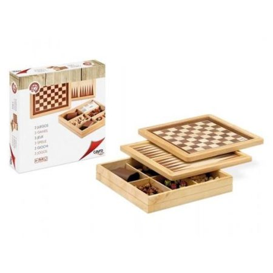
3 giochi : [scacchi, dama, backgammon]
Il tavolo da gioco è il coperchio: lo girate e da una parte c'è la scacchiera, dall'altra il percorso del backgammon. Sotto, negli scomparti, i pezzi di legno di tutti e tre i giochi, i dadi e il bicchiere in ecopelle per lanciarli. Le regole le sapete già: qui la differenza la fa l'oggetto.
-

By the Book : un gioco di equilibri
Dodici libri di forme diverse e un gatto da incastrare, in modo che lo scaffale sopra resti dritto. Dritto non a occhio: nella scatola c'è una livella vera, e quando la bolla non sta in mezzo non c'è discussione. Si trattiene il fiato mentre si impila, e il gatto non aiuta.
-
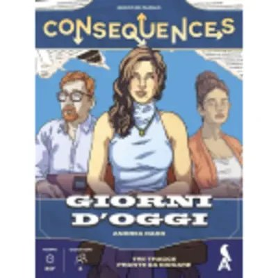
Consequences. Giorni d'oggi
Nessun tabellone, nessuna pedina: quattro persone sedute e una storia da tirare fuori parlando — una vicenda di casa, un impresario, il pokerino del venerdì. Ognuno ha un obiettivo segreto e mezz'ora per portarci la conversazione, senza che gli altri tre capiscano dove sta andando.
-
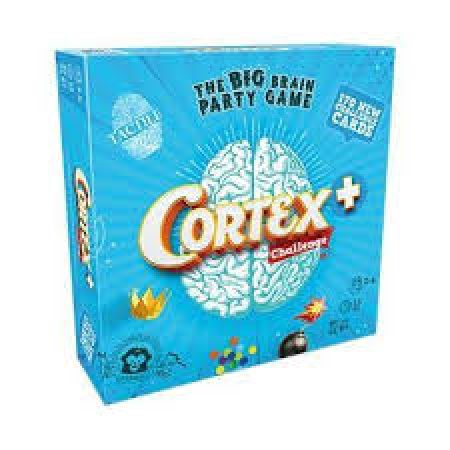
Cortex challenge + : the big brain party game
Prove che durano quanto un respiro: riconoscere una superficie con le dita, ricordare dov'era una cosa, fare un conto prima del vicino. Sono così tante che nessuno fa in tempo a impararle a memoria, e dentro la scatola c'è perfino un puzzle a forma di cervello.
-
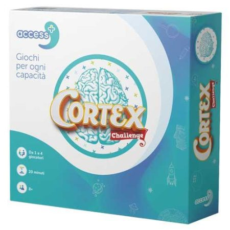
Cortex challenge access+
Le carte sono grandi e dieci di esse si leggono con le dita invece che con gli occhi: questa versione di Cortex è fatta perché al tavolo possa sedersi anche chi ha un disturbo cognitivo, senza fargli giocare una partita a parte. Due livelli di difficoltà, e si corre tutti insieme.
-
Dama cinese
Un disco di legno pieno, pesante: lo appoggiate sul tavolo e sta fermo lì, altro che il cartoncino da piegare delle scatole da pochi euro. Dentro ci sono sessanta pedine di legno colorato, dieci a testa — che vuol dire sei persone sedute intorno alla stessa partita.
-

Destini Infiniti. La citt meccanica
Un continente sconosciuto, una città meccanica piena di segreti, e voi da soli a leggerne una pagina alla volta scegliendo dove andare. Quando arriva uno scontro non si tira un dado sperando bene: si prende in mano il mazzo, e non c'è nessuna sfortuna a cui dare la colpa.
-
Elfenland de luxe
Elfi giovani mandati in giro a visitare più città possibile, e il bello non è la strada: è come ci arrivate. Draghi, unicorni, maiali giganti, elfociclette, nuvole magiche — e certi mezzi si trovano solo in certe regioni. Questa edizione mette in una scatola sola il gioco e le sue tre espansioni.
-
Farmerstein : una pazza sfida vegetale
Scienziati pazzi con un'armata di ortaggi mutanti: pomodori agguerriti, ravanelli letali, cetrioli feroci, e venti minuti per prendersi il mondo facendosi i dispetti a vicenda. Poi si ribellano le zucchine zombie — uscite dai vostri stessi esperimenti — e mettono in croce i piani di tutti.
-

Fino a prova contraria : la collana del cielo stellato
Siete avvocati alle prime armi e dovete tirare Peter fuori dai guai. La giuria non sta ferma: ogni volta che ribattete male, qualche giurato scivola dalla parte dell'accusa. E serve internet per giocarci — il sito del gioco è dentro la partita, non un extra.
-
Funky gallo : il gioco di carte
L'astuccio è sagomato a forma di gallo, e già così in mezzo al tavolo fa il suo effetto. Poi si comincia a urlare il nome di un gesto finché due persone non urlano lo stesso: a quel punto lo si fa insieme, ridendo, e ci si libera di due carte. Venti minuti senza stare zitti un secondo.
-
La corsa dei colori : il gioco di percorso in cui non serve contare
Sei marziani in gara di velocità, e per far correre le pedine non serve contare: si va a colori e a forme. Il percorso lo componete voi come vi pare, e le quattro modalità salgono di difficoltà una dopo l'altra — si parte che basta saper riconoscere un colore.
-

Links : Il gioco che unisce le idee
Giallo e profumato: cosa vi viene in mente? La prima cosa, ditela ad alta voce. Qui non si sbaglia mai — vince la parola più strana, più poetica o più ridicola, e la clessidra da trenta secondi non lascia il tempo di pensarci troppo. Intorno al tavolo ci si sta anche in dieci.
-

Lost in adventure : il labirinto di Dedalo
Il labirinto di Dedalo, e da qualche parte là dentro il Minotauro. Si va avanti scoprendo una carta alla volta: si parla con chi si incontra, si raccolgono oggetti, si sceglie da che parte andare — e a seconda di come vi siete comportati la storia finisce in modi diversi.
-
More or less? : quick calculation game
Una freccia gira e si ferma su un numero. Nove dadi finiscono sul tavolo e da lì è questione di secondi: servono due dadi dello stesso colore che sommati — o sottratti — diano quel numero, e chi lo vede per primo prende il gettone. Poi la freccia gira di nuovo.
-

Murder Party Pocket. Cala Il Sipario : una nuova indagine per il Commissario Ricciardi : un gioco investigativo
Un delitto per il Commissario Ricciardi, e il racconto l'ha scritto Maurizio de Giovanni apposta per questa scatola. Ognuno veste i panni di un personaggio del giallo, l'assassino è seduto al tavolo con voi — e tutto quello che serve per la serata sta in ventisei carte.
-

Pop!
Sta per cominciare una festa, e il pericolo non è un nemico: sono i colori. Due uguali finiti vicini esplodono, e l'esplosione se ne tira dietro un'altra. Voi siete le Guardie che dovrebbero tenere l'ordine — quindi il disastro, se arriva, l'avete combinato voi.
-
Quirky circuits : robottini all'avventura
-
Quoridor
-
Qwirkle
-

Radio Victory : vite e ruoli in gioco nella Resistenza Italiana
-
Shadows Amsterdam
-
Shining
-
Smemorell. Il memo degli Umarells
-

Squid game : che i giochi abbiano inizio
-
Stampfarm
-
Storie nere : 50 misteri da risolvere
-
Storie nere : 50 misteri da risolvere vol. 2
-
The queen's gambit : la regina degli scacchi